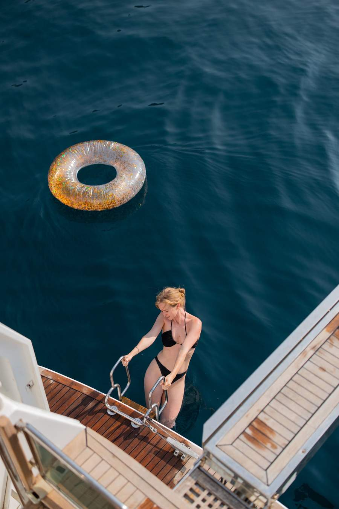

The Blue Cave lights up for two hours a day. From 11 to 13. After that — it's a grey grotto, like any other. Most tourist boats bring guests in at three in the afternoon. Their photos come out a dull blue, and on Instagram it gets blamed on filters. They were simply late. The light in the cave isn't marketing. It's physics: when the sun is at the right angle, a beam passes through the underwater entrance, hits the white sandy floor, and lights the water from below. The window is about ninety minutes a day.
"I've been coming here for seven years. I still can't predict which day will be brighter — it depends on clouds, the tide, and, I suspect, the mood of the sea. But the 11-to-13 window is steady." — Captain Alexey
Plava Špilja, locally. A natural cave on the Luštica peninsula, on the western side where Kotor Bay opens to the sea. There's no access by land — only by boat. The entrance from the sea is narrow; inside, the cave widens into a chamber the size of a training pool. Under the water, a short submerged corridor lets the light through. The water inside is three to four metres deep. You can sail in, cut the engine, and hear only the echo of water against rock.
Technically — the sun needs to be high enough for the beam to pass through the underwater entrance. And high enough that the beam doesn't fade through the water column. The angle works between 10:45 and 13:15, but the strongest glow is around noon. In June and September the window is slightly wider — the sun is nearly overhead. In May and October it's shorter, you have to time it precisely. From November to April there's barely any light — the cave goes grey.
From Porto Montenegro to the cave it's two hours of steady cruising. So we leave at 9:00, and at 11:00 we're at the entrance. Two places along the way you don't pass by. The submarine docks under Luštica — a former Yugoslav military base, tunnels cut straight into the rock, the boats are gone but the tunnels are open from the sea. And Mamula island with its 19th-century Austro-Hungarian fortress. We spend thirty to forty minutes in the cave: we enter, cut the engine, swim, take photos.
We usually head to Rybarsko Selo — a fishing village just east of the cave. A small restaurant right on the dock. We eat what was caught that morning. No menu — you ask what they have and you order. If you're lucky, it's sea bream or sea bass, a kilo for two. The alternative is Fort Rose on the Herceg Novi side, inside the walls of a former Austro-Hungarian fortress. More expensive, more of a 'restaurant' feel. If you'd rather not go ashore — let us know in advance, we fire up the stern grill at 13:30.
We head back across the bay with a stop at Stradioti island. A swim in the open sea before the enclosed waters of the bay — your last chance before the run back to Tivat. In August the water is still 25°C, in September 22°C, in October about 19°C, but on a sunny day you can still get in.
Swimwear — you'll be in the water for at least an hour during the day. A GoPro or phone in a waterproof case — there are a few shots inside the cave that no land-based photographer can catch. Light clothes — Rybarsko Selo doesn't mind shorts. Sunscreen — you'll be on the sun deck for three hours on the way back. You don't need fins: the cave is shallow inside.
In July and August there's a queue at the entrance — water taxis from Herceg Novi bring tourists in batches. We wait ten or fifteen minutes for the window. While we wait, we open champagne on the deck, no one complains. If on the day of the charter the easterly wind is stronger than 15 knots — the cave is unsafe to enter. We decide ahead of time and switch to the Kotor Bay route. That's not a backup — it's a different day, also a good one, just different. And: sometimes the light in the cave isn't what it could be — a cloud sits over Luštica, or there's chop. The photos still come out — just not 'liquid neon', more like 'muted blue'.
Slots for the Blue Cave during high season fill up two to three weeks in advance. In July and August — a month ahead. If you have a specific date — write to us right away, we'll check the forecast and lock it in. The route runs as an 8-hour charter — €2,600. It can be stretched to 12 hours (€3,000) if you'd like to add an evening swim and sunset on the deck.
No auto-responders, no forms with red asterisks. The route is agreed with you personally — usually within 2 hours during the season (May–October), faster off-season.
Request Dates